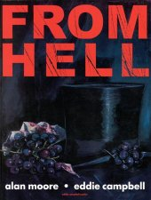
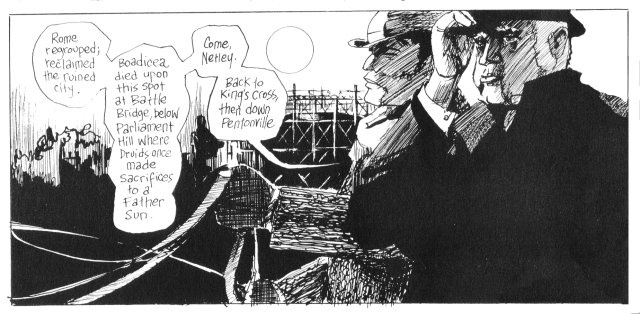

From Hell
]
by Alan Moore (author), and Eddie Campbell (artist), 1989. On amazon.co.uk.
Moore has almost single-handedly transformed the definition of the comic industry in the last 20 years, and this fetishistically researched comic-book dramatisation of the dark and macabre Jack the Ripper murders is no exception to his visionary high standards. Moore plunges headlong into the sensational conspiracy theory that Royal Physician, Dr. William Gull, killed East End prostitutes to silence the story of an illegitimate royal baby, under the direct orders of the implacable Queen Victoria herself.
Dr Gull regards his mission as the great work of his life, which will not only quash the threat to the crown, but also fulfil ancient pagan destinies, reasserting the male dominance over matriarchy that began when the Romans reclaimed London and slew Queen Boadicea. Gull knows this because he has knelt before his God, who told him just what needed to be done. As a doctor, Gull knows that these visions are madness, brought about by his stroke of the previous year. As a man, however, he responds that "If this is madness, who'd be sane?", and, embracing the subjective reality of his hallucinations, he goes about his work with gusto, confiding along the way in his witless coachman and reluctant accomplice, Nettley.

The story is a tapestry, woven on many levels. The iniquities of wealth and power are richly depicted as the poverty-stricken residents of the East End are contrasted with the powers-that-be, who move swiftly and decisively to ensure that Gull is never caught nor found out, for fear of scandal, even while he goes on killing with impunity.
The appalling violence of the murders and dismemberment of the victims is shown in unflinching detail, one pivotal 34-page chapter "The Best of all Tailors", consisting solely of the actions of Gull, a renowned surgeon, with his victim in a tiny, squalid room, which made me profoundly grateful that the sketches are only in black-and-white.
Such graphic nastiness is not for no reason. Gull is convinced that the act of violence is a pivotal part of the ancient and grisly prophesies he is enacting. Under the psychological strain of each successive murder, Gull experiences increasingly vivid hallucinations, symptoms of his condition. But then, something altogether strange starts to happen. As his visions become more vivid, Gull begins to experience glimpses of the future. Visions of our time. At times and places where people have historically claimed to have seen the ghost of Jack the Ripper, Moore cunningly reverses the perspective, allowing Gull to see them also. By the end, Gull's visions have him stalking the sterile hallways of the modern world in blood-soaked shirtsleeves, roaring at oblivious office workers, exhorting them to look up and remember the history from which our century was birthed in blood. The ancient magic that Gull raved about was real, while we have lost our connection to our violent and animal past, and with it, our very humanity.

Rating: 10/10. Cor blimey it's a classic.
Comments